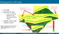
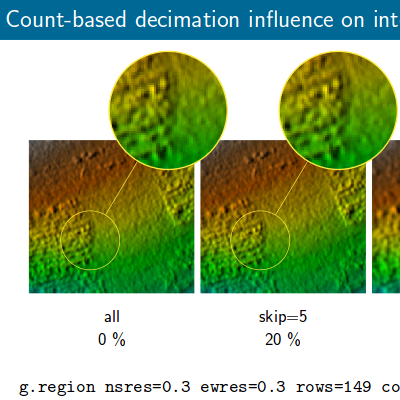
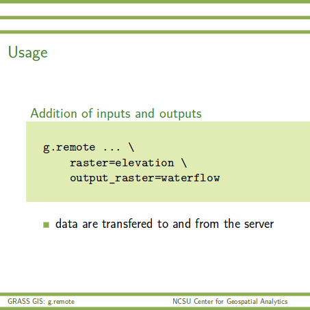
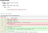

-

Harmon, B. A., Petrasova, A., Petras, V., and Mitasova, H., 2016,
Computational Landscape Architecture:
Procedural, Tangible, and Open Landscapes.
In: J. R. Anderson & D. Ortega (Eds.),
Innovations in Landscape Architecture. Routledge.
-

Jeziorska, J.; Mitasova, H.; Petrasova, A.; Petras, V.; Divakaran, D.; Zajkowski, T., 2016,
Overland flow analysis using time series of sUAS-derived elevation models,
ISPRS Annals.
-

Petras, V., Mitasova, H., Petrasova, A., 2015.
Mapping gradient fields of landform migration.
In: Jaroslaw, J., Zwolinski, Z., Mitasova, H., Hengl, T.
Geomorphometry for Geosciences.
Bogucki Wydawnictwo Naukowe, Adam Mickiewicz University in Poznan
– Institute of Geoecology and Geoinformation.
Poznan, Poland.
ISBN: 978-83-7986-059-3
-

Petras, V., Petrasova, A., Harmon, B., Meentemeyer, R.K., Mitasova, H.
Integrating Free and Open Source Solutions into Geospatial Science Education.
ISPRS International Journal of Geo-Information. 2015, 4, 942-956.
doi:10.3390/ijgi4020942
-

Petras, V., Petrasova, A., Mitasova, H. FOSS4G 2014.
Spatio-temporal data visualization in GRASS GIS: desktop and web solutions (link not valid yet).
Web page with selected animations and applications links.
[in review]
Online publication of geospatial data is a common requirement of GIS users.
Several free and open source solutions are available. These solutions
include JavaScript libraries for building web map applications as well as
server-side applications for data publishing. This project aims at GIS
users which don't have an option to run a server-side applications
and cannot build web map applications easily. The project consists of
two loosely coupled parts where one or the other can be easily replaced by some other solution.
First part is a set of web map applications. Each of them is specialized to
different type of data, for example one application provides tools to
show spatio-temporal data. Second part is connected to GRASS GIS and
consists of a set of GRASS modules which provide several ways of
exporting different types of data from GRASS GIS. Besides maps, other
data such as statical values about maps are also exported. Connecting
exported data and web applications is as easy as putting the files into
the right directory. The solution enables easy publication without any
requirements on user or publication servers and is intended to be used
for ad hoc data sharing with colleagues which may or may not use GIS
but for sure will appreciate interactive data visualization including
additional information.
-
Petrasova, A., Harmon, B., Petras, V., Mitasova, H., 2014.
GIS-based environmental modeling with tangible interaction and dynamic visualization.
In: Ames, D.P., Quinn, N.W.T., Rizzoli, A.E. (Eds.),
Proceedings of the 7th International Congress on Environmental Modelling and Software,
June 15-19, San Diego, California, USA. ISBN: 978-88-9035-744-2
-
Kratochvilova, K., Petras, V., 2012.
Quantum GIS plugin for Czech cadastral data.
In: Geoinformatics FCE CTU, Volume 8,
Prague, Czech Republic.
-
Petras, V., 2011.
Implementation of SQLite database support in program gama-local.
In: Geoinformatics FCE CTU, Volume 7,
Prague, Czech Republic.
-

Petrasova, A., Harmon, B., Petras, V., Mitasova, H., 2015.
Tangible Modeling with Open Source GIS. Springer International Publishing. doi:10.1007/978-3-319-25775-4
This book presents a new type of modeling environment where users
interact with geospatial simulations using 3D physical models of studied landscapes.
Multiple users can alter the physical model by hand during scanning, thereby providing
input for simulation of geophysical processes in this setting.
The authors have developed innovative techniques and software that couple this hardware
with open source GRASS GIS, making the system instantly applicable to a wide range of
modeling and design problems. Since no other literature on this topic is available,
this book fills a gap for this new technology that continues to grow.
Tangible Modeling with Open Source GIS will appeal to advanced-level students studying
geospatial science, computer science and earth science such as landscape architecture and natural resources. It will also benefit researchers and professionals working in geospatial modeling applications, computer graphics, hazard risk management, hydrology, solar energy, coastal and fluvial flooding, fire spread, landscape, park design and computer games.
-

Petras, V., Petrasova, A., Mitasova, H.
GRASS GIS loves lidar
.
May 2-5, 2016, FOSS4G North America 2016, Raleigh, USA.
[other versions]
-

Petras, V., Newcomb, D., Mitasova, H.
Efficient processing of dense point clouds in GRASS GIS
.
April 3-7, 2016, US-IALE Annual Meeting, Asheville, NC, USA.
[other versions]
-

Petras, V.
New lidar processing functionality in GRASS GIS 7.1
.
Presentation for U.S. Fish and Wildlife Service Remote Sensing Technical Group meeting.
February 22, 2016.
-

Petras, V.
Efficient processing of dense UAV point clouds.
.
Class project presentation in
GIS595/MEA792: UAV/lidar Data Analytics.
December 1, 2015.
-

Petras V., Petrasova, A., Cepero-Perez, K., Neteler, M., Delucchi, L., Landa, M., Mitasova, H.
Using Free and Open Source Solutions in Geospatial Science Education.
FOSS4G Europe 2015.
July 16, 2015, Como, Italy.
-

Petras, V., Mitasova, H., Petrasova, A. (Presented by H. Mitasova.)
Mapping gradient fields of landform migration.
Geomorphometry 2015.
June 24, 2015, Poznan, Poland.
(Associated publication in Geomorphometry for Geosciences)
-

Petras, V., NCSU Center for Geospatial Analytics, Landscape Dynamics Lab, May 2015.
g.remote: Remotely execute GRASS GIS scripts on your server.
Access to a powerful Linux machine can be easier with
GRASS GIS module specialized on communication with
a remote server, cluster or part of a cloud.
-

Petras, V., NCSU Geospatial Analytics Forum, October 2014.
How Open Source Geospatial Development Works.
Easy reproducibility, fearless open sharing, broad collaboration,
long-term preservation of outcomes and much more are common things
in free, libre and open source software, academia can do the same
using open source software and open source approach.
-

Petras, V., Petrasova, A., Mitasova, H., FOSS4G 2014.
Spatio-temporal data visualization in GRASS GIS: desktop and web solutions.
Web page with selected animations and applications links,
Video of the talk on Vimeo.
-

Petras, V., NC State University FOSS Fair 2014.
Open source at OSGeoREL.
GRASS GIS and NCSU OSGeoREL experience with open source development in academia.
-

Petras, V., Petrasova, A., Chemin, Y.,
Zambelli, P., Landa, M., Gebbert, S., Neteler, M., Loewe, P.
EGU 2015.
Analyzing rasters, vectors and time series using new Python interfaces in GRASS GIS 7.
(abstract,
PDF)
-

Chemin, Y., Petras, V., Petrasova, A., Landa, M., Gebbert, S.,
Zambelli, P., Markus Neteler (6), Peter Loewe, Di Leo, M.
EGU 2015.
GRASS GIS: a peer-reviewed scientific platform and future research repository.
(abstract,
PDF)
-

Testing framework for GRASS GIS: ensuring reproducibility of scientific geospatial computing
Petras, V., Gebbert, S.
GRASS GIS, a free and open source GIS, is used by many scientists directly or through other projects such as R or QGIS to perform geoprocessing tasks. Thus, a large number of scientific geospatial computations depend on quality and correct functionality of GRASS GIS. Automatic functionality testing is therefore necessary to ensure software reliability. Here we present a testing framework for GRASS GIS which addresses different needs of GRASS GIS and geospatial software in general. It allows to test GRASS tools (referred to as GRASS modules) and examine outputs including large raster and vector maps as well as temporal datasets. Furthermore, it enables to test all levels of GRASS GIS architecture including C and Python application programming interface and GRASS modules invoked as subprocesses. Since GRASS GIS is used as a platform for development of geospatial algorithms and models, the testing framework allows not only to test GRASS GIS core functionality but also tools developed by scientists as a part of their research. Using testing framework we can test GRASS GIS and related tools automatically and repetitively and thus detect errors caused by code changes and new developments. Tools and code are then easier to maintain which results in preserving reproducibility of scientific results over time. Similarly to open source code, the test results are publicly accessible, so that all current and potential users can see them. The usage of testing framework will be presented on an example of a test suite for r.slope.aspect module, a tool for computation of terrain slope, aspect, curvatures and other terrain characteristics.
[ePoster and abstract in program]
-

GRASS GIS Vector State of the Art — Gearing towards GRASS GIS 7
Metz, M., Landa, M., Petrasova, A., Petras, V., Chemin, Y., Neteler, M. and The GRASS GIS Development Team
Topology ensures that adjacent geographic components in a single vector map are related. In contrast to non-topological GIS, a border common to two areas exists only once and is shared between the two areas. Topological representation of vector data helps to produce and maintain vector maps with clean geometry as well as enables the user to perform certain analyses that can not be conducted with non-topological or spaghetti data. Non-topological vector data are automatically converted to a topological representation upon import. Further more, various cleaning tools exist to remove non-trivial topological errors.
In the upcoming GRASS GIS 7 release the vector library was particularly improved to make it faster and more efficient with an improved internal vector file format. This new topological format reduces memory and disk space requirements, leading to a generally faster processing. Opening an existing vector requires less memory providing additionally support for large files. The new spatial index performs queries faster (compared to GRASS GIS 6 more than 10 times for large vectors). As a new option the user can select a file-based version of the spatial index for large vector data. All topological cleaning tools have been optimized with regard to processing speed, robustness, and system requirements.
The vector engine comes with a new prototype for direct read/write support of OGR Simple Features API.
Additionally vector data can be directly exchanged with topological PostGIS 2 databases. This enables GRASS to read and write topological primitives beside native file-based format also to the topological PostGIS 2 databases.
Considering the wide spread usage of Esri Shapefile, a non-topological format for vector data exchange, it is particularly advantageous that GRASS GIS 7 offers advanced cleaning tools.
For power users and programmers, the new Python interface allows to directly access functions provided by the underlying C libraries; this combines the ease of writing Python scripts with the power of optimized C functionality in the library backend.
[PDF]